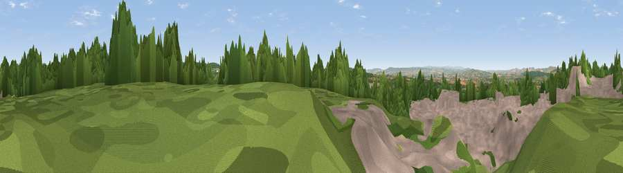

Viewpoint near West Hill
#14838 in England · top 22% of its area beats it · near West HillWhere it is
The exact computed spot (SY 06075 94475). Click the marker for map links.
The view, rendered

A 360° render of this exact spot computed from the terrain model, tree cover and land cover — summer colours, afternoon light, calibrated against photographs of famous viewpoints. Real trees, hedges and buildings will differ in detail.
The panorama
Grey silhouette: terrain skyline in each direction (720 bearings, Earth curvature and refraction included). Dashed green: skyline with trees (+15 m) and buildings (+8 m) as obstacles. Blue strip: how far the ground is visible on each bearing.
Where the view opens
Wedge length = distance to the farthest visible ground on that bearing (vegetation-aware). Rings at 10, 25 and 50 km.
What fills the view
36% grassland · 30% woodland · 23% built-up · 12% cropland
Angular shares of the visible panorama (visual magnitude), not map area. Landscape diversity 0.58 (0–1 Shannon).
Key numbers
More beautiful places nearby
The staircase of upgrades: each row has a higher view potential than everything closer. Driving times are estimates from straight-line distance, calibrated against real road routing — check an actual route before setting out.
| Place | Direction | Drive | Score |
|---|---|---|---|
| Viewpoint near West Hill | NNW · 0 km | ~1 min | 65.4 |
| Viewpoint near West Hill | N · 1 km | ~4 min | 66.2 |
| Viewpoint near Tipton St John | ESE · 6 km | ~13 min | 73.3 |
| Viewpoint near Tipton St John | SE · 6 km | ~13 min | 81.5 |
| Viewpoint near Colaton Raleigh | SSE · 8 km | ~16 min | 82.1 |
| Viewpoint near Sidmouth | SSE · 9 km | ~18 min | 83.0 |
| High Peak | SSE · 10 km | ~19 min | 85.3 |
| Golden Cap | E · 35 km | ~53 min | 88.7 |
50.74226, -3.33253 · source: screening · position refined by local search. Computed location — check access rights before visiting.